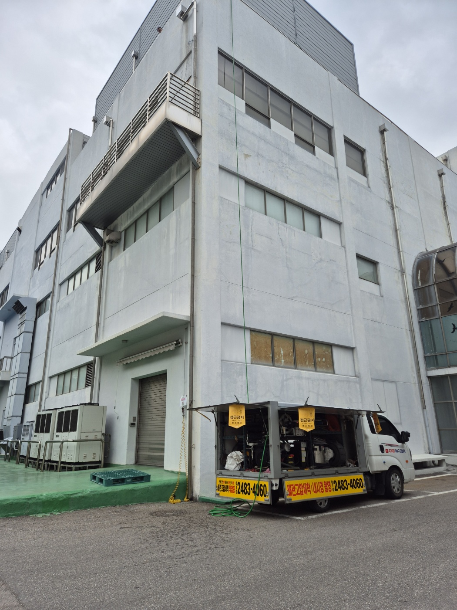
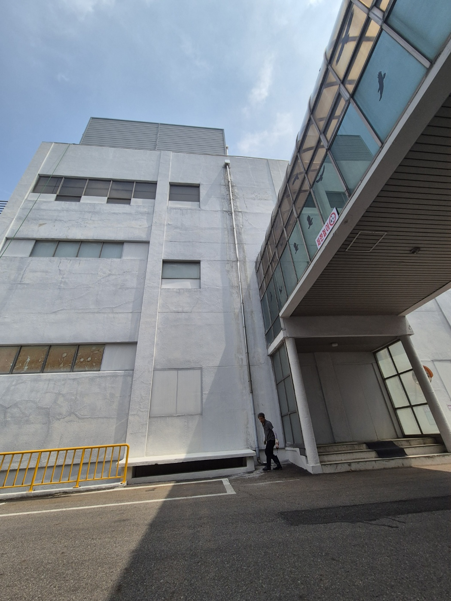
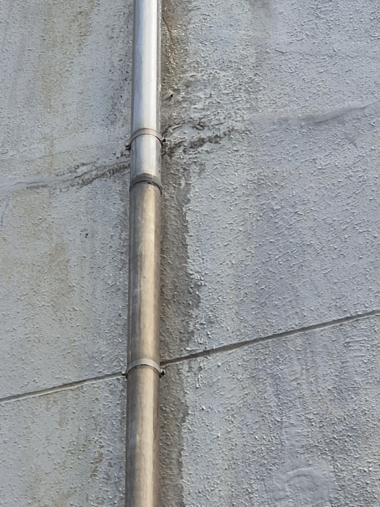
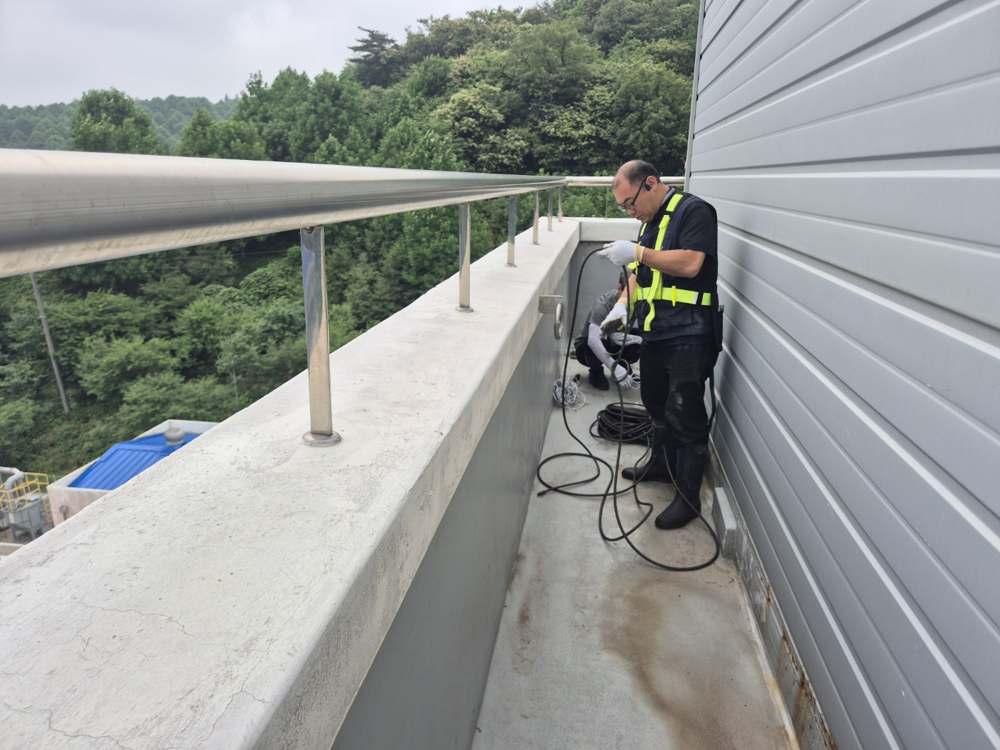
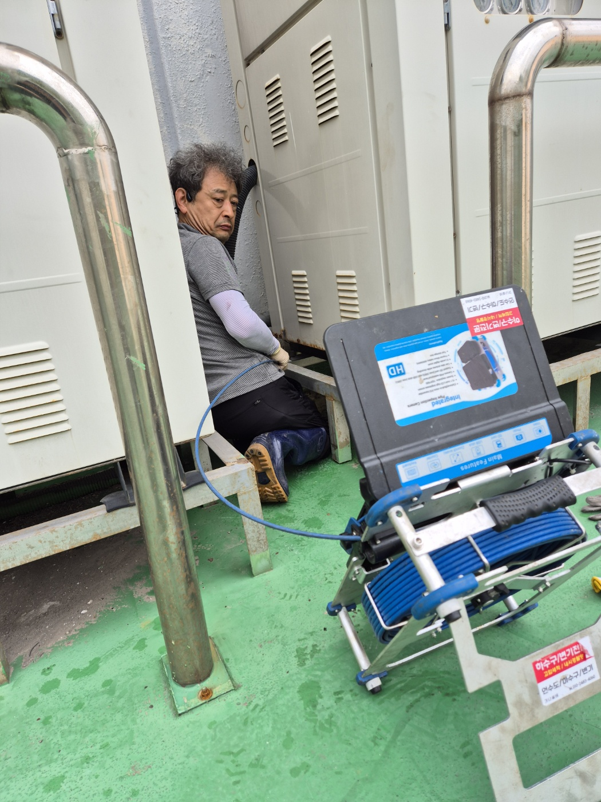
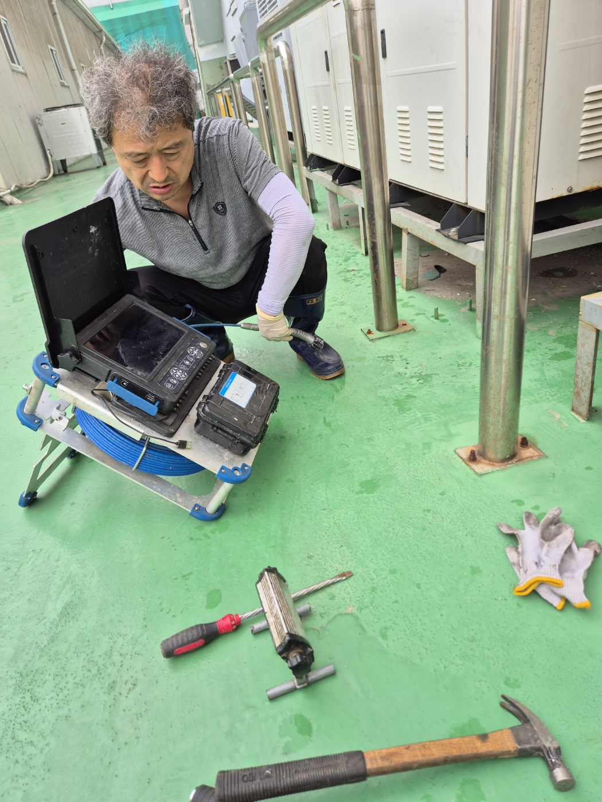
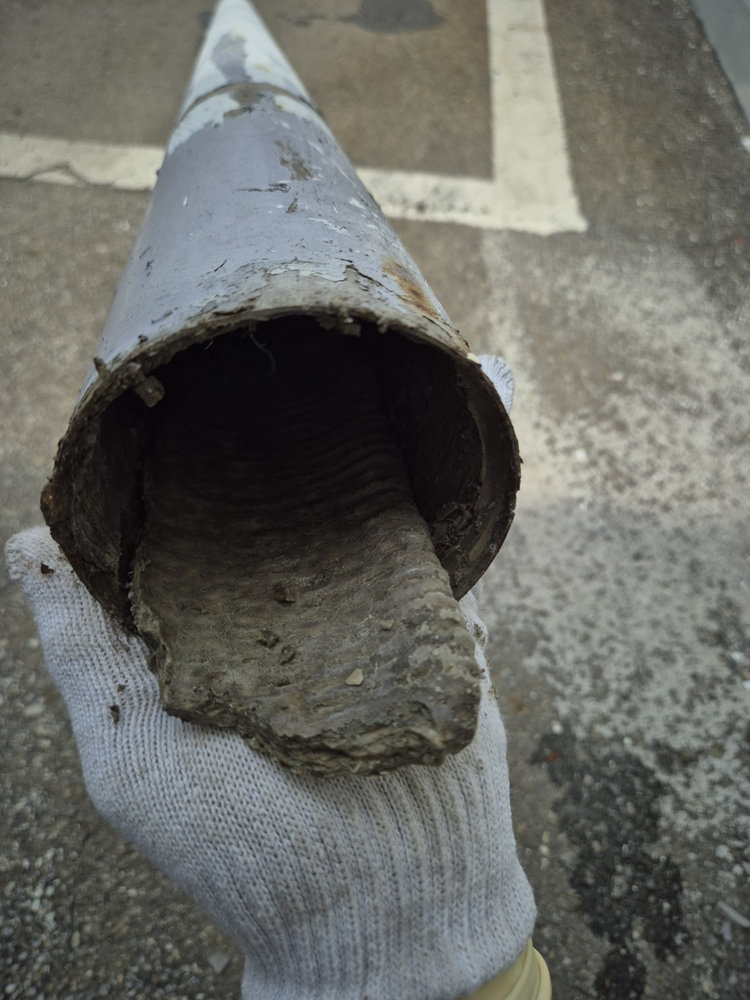
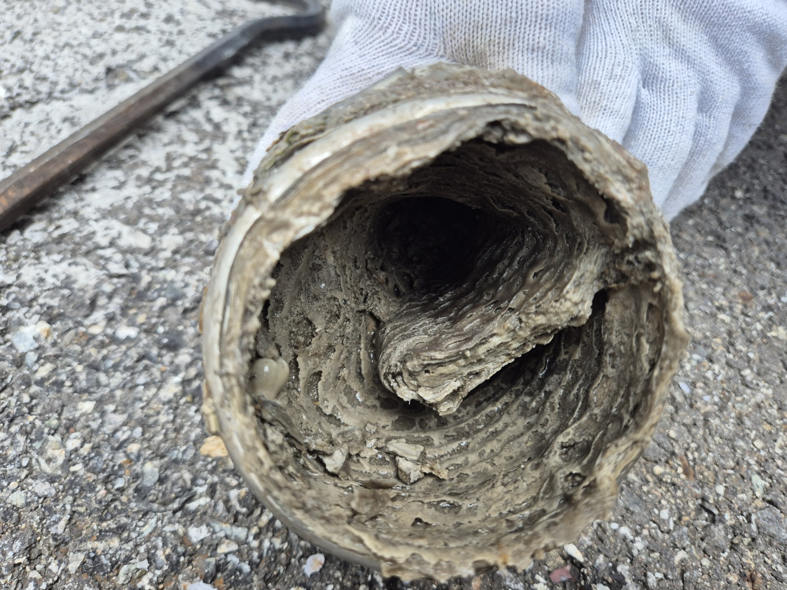

안녕하세요.. 고고고 설비입니다.. 오늘은 처음으로 천안시 불당동까지 출동한 현장입니다. 회사 건물 우수관(빗물배수관)이 막혀서 벽을 타고 물이 새고 있다는 신고를 받았어요.
4층 높이의 건물이었는데, 외벽을 따라 길게 이어진 우수관이 한눈에 들어왔습니다. 도착하자마자 벽면부터 살펴봤는데, 건물 자체가 꽤 오래돼 보여서 배관도 그만큼 오래됐겠다는 생각이 들더라고요.
우수관 옆으로 물 자국이 벽을 타고 길게 번져 있었습니다.. 빗물이 관 안으로 제대로 들어가지 못하고 이음부 쪽으로 계속 새어나온 흔적이었어요.


물이 새는 위치를 짚어보려면 위쪽부터 확인해야 해서, 안전벨트를 착용하고 옥상 난간 쪽으로 올라갔습니다. 주변이 온통 산으로 둘러싸인 곳이라 낙엽이며 나뭇가지가 우수관으로 많이 들어갈 수 있는 환경이었어요. 난간 너머로 바로 아래가 내려다보이는 높이라 안전벨트부터 단단히 채우고 작업을 시작했습니다.

옥상 배관 점검구에 내시경 카메라를 넣어 안쪽 상태부터 확인했습니다. 실외기와 전기 패널 사이 좁은 틈으로 몸을 넣어야 해서 자세 잡기부터 쉽지 않았어요.


배관 한 구간을 분리해서 안쪽을 들여다보니, 흙과 이물질이 그대로 굳어서 배관 단면을 거의 다 막고 있었습니다.. 오랫동안 쌓여온 게 한눈에 보일 정도였어요. 이 정도면 빗물이 조금만 많이 와도 벽 밖으로 넘칠 수밖에 없겠다 싶었습니다.

단면을 자세히 보니 층층이 쌓인 흙과 찌꺼기가 나이테처럼 겹겹이 굳어 있었어요.

막힌 구간을 확인한 뒤 고압호스를 넣어 안쪽에 남은 이물질까지 구간을 나눠 반복해서 세척했습니다. 옥상에서 시작해 벽을 타고 내려오는 긴 배관이라 한 번에 끝내기보다는 위아래를 오가며 여러 번 왕복했어요.
작업을 마치고 물을 흘려보내며 확인했는데, 막혀있던 게 무색하게 시원하게 잘 빠지더라고요. 벽면에 새는 곳도 없는 걸 확인하고 마무리했습니다.
산 근처 건물은 낙엽이나 흙이 우수관으로 유입되기 쉬운 만큼, 장마철 전후로 한 번씩 점검해주시는 걸 권해드립니다.
고고고 설비는 주택, 아파트, 원룸, 상가, 공장의 생활 하수 오수 배관을 관리해 주는 업체입니다. 고고고 설비에 전화 주시면 친절상담 정확한 진단 확실한 해결로 보답해 드리겠습니다!!